ในบทนี้จะกล่าวถึงตัวแปรที่สำคัญในการวิเคราะห์ระบบคิวเดี่ยว และอธิบายถึงความสัมพันธ์ระหว่างตัวแปรต่างๆ ในรูป 3.2 แสดงตัวแปรหลักๆ ในระบบคิว
| = | ค่าเฉลี่ยของเวลาการเข้าใช้ระบบ (Mean Arrival Time) ซึ่งอาจขึ้นอยู่กับสถานะของระบบ เช่นจำนวนงานในระบบ | |
| 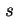 | = | เวลาที่ใช้ในการบริการงานหนึ่งงาน |
| = | ค่าเฉลี่ยอัตราการบริการต่อหนึ่งเครื่องการบริการ (Mean Service Rate per Server) 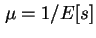
ค่าอัตราการบริการของ |
|
| = | จำนวนงานทั้งหมดในระบบ เรียกว่า ``ความยาวของคิว'' (Queue Length) ความยาวของคิวรวมถึงงานที่กำลังรับบริการอยู่ และงานที่กำลังรอรับบริการอยู่ | |
| 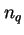 | = | จำนวนงานที่กำลัง ``รอ'' รับบริการอยู่ ซึ่งจะต้องน้อยกว่า |
| 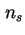 | = | งานที่กำลัง ``รับบริการ'' อยู่ |
| = | เวลาตอบสนอง (Response Time) หรือ เวลาที่ใช้ในระบบ ซึ่งรวมถึง เวลาที่ใช้ในการรอรับบริการ และเวลาที่รับบริการ | |
| 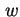 | = | เวลารอ (Waiting Time) คือเวลาที่รอรับบริการอยู่ในคิว นับจากเริ่มเข้าใช้ระบบถึงเวลาที่เริ่มได้รับบริการ |
ข้อที่มักเข้าใจผิด
``ความยาวของคิว'' (Queue Length) คือ ความยาวของคิวรวมถึง-งานที่กำลังรับบริการอยู่ และงานที่กำลังรอรับบริการอยู่
ไม่ใช่เพียงจำนวนงานที่รอรับบริการอยู่เท่านั้น! รวมถึงงานที่กำลังรอรับบริการอยู่ด้วย
ตัวแปรขั้นต้นทุกตัวนอกจาก  และ
และ  เป็นตัวแปรสุ่ม มีความสัมพันธ์หลายตัวที่สามารถใช้งานได้กับคิว 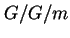 อีกทั้งระบบคิวที่เราจะวิเคราะห์ต่อไปก็เป็นกรณีเฉพาะของ ซึ่งสามารถใช้งานกับระบบคิวส่วนใหญ่ได้
เป็นตัวแปรสุ่ม มีความสัมพันธ์หลายตัวที่สามารถใช้งานได้กับคิว 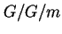 อีกทั้งระบบคิวที่เราจะวิเคราะห์ต่อไปก็เป็นกรณีเฉพาะของ ซึ่งสามารถใช้งานกับระบบคิวส่วนใหญ่ได้
ระบบที่ไม่เสถียร คือระบบที่มีโอกาสที่จำนวนงานในระบบเพิ่มขยายขึ้นเป็นอนันต์ สภาวะของระบบคิวที่เสถียร คือระบบที่อัตราการเข้าใช้ระบบ น้อยกว่าอัตราการให้บริการของระบบ
| 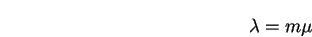 |
ในที่นี้มีจำนวนเครื่องบริการเท่ากับ  สภาวะเสถียรไม่ครอบคลุมระบบที่มีประชากรจำกัด เนื่องจากระบบที่มีประชากรจำกัด จะมีความเสถียรอยู่แล้วจากตัวของระบบคิวเอง ระบบจะไม่สามารถเข้าสู่สภาวะไร้เสถียรภาพได้ เนื่องจากเมื่อบัฟเฟอร์เต็ม งานที่เข้ามาใหม่จะหายไป ไม่สามารถเข้าใช้บริการได้
สภาวะเสถียรไม่ครอบคลุมระบบที่มีประชากรจำกัด เนื่องจากระบบที่มีประชากรจำกัด จะมีความเสถียรอยู่แล้วจากตัวของระบบคิวเอง ระบบจะไม่สามารถเข้าสู่สภาวะไร้เสถียรภาพได้ เนื่องจากเมื่อบัฟเฟอร์เต็ม งานที่เข้ามาใหม่จะหายไป ไม่สามารถเข้าใช้บริการได้
จำนวนงานในระบบคิว เท่ากับผลรวมของจำนวนงานในคิวที่รอรับบริการ รวมกับจำนวนงานที่กำลังรับบริการ
| 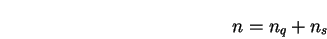 |
ค่า  , , และ เป็นตัวแปรสุ่ม จากความสัมพันธ์ดังกล่าว ความสัมพันธ์ของค่าเฉลี่ยจะเท่ากับ
, , และ เป็นตัวแปรสุ่ม จากความสัมพันธ์ดังกล่าว ความสัมพันธ์ของค่าเฉลี่ยจะเท่ากับ
| 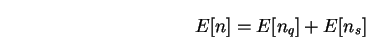 |
ค่าเฉลี่ยของจำนวนงานทั้งหมดในระบบ เท่ากับผลรวมของค่าเฉลี่ยของจำนวนงานที่รอรับบริการ และค่าเฉลี่ยของจำนวนงานที่กำลังรับบริการ
ถ้าอัตราการให้บริการของเครื่องบริการไม่ขึ้นอยู่กับจำนวนงานที่รออยู่ในคิว เราจะได้
| 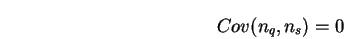 |
และ
| 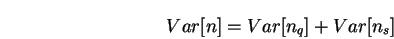 |
คือความแปรปรวนของจำนวนงานทั้งหมดในระบบ เท่ากับผลรวมของความแปรปรวนของจำนวนงานที่รอรับบริการ และความแปรปรวนของจำนวนงานที่กำลังรับบริการ
ถ้างาน ``ไม่มี''การสูญหายไปจากระบบ เนื่องจากจำนวนบัฟเฟอร์ไม่พอเพียง-จำนวนงานในระบบมีความสัมพันธ์กับค่าเฉลี่ยของเวลาตอบสนองดังต่อไปนี้
สมการ 3.6 และ 3.7 คือสมการกฎของ Little
เวลาที่งานอยู่ในระบบคิว แสดงในรูป 3.2 เท่ากับผลรวมของเวลาที่งานรอการบริการ และ เวลาที่งานกำลังรับการบริการ
| 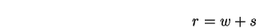 |
ค่า  , , และ เป็นตัวแปรสุ่ม จากความสัมพันธ์ดังกล่าว ความสัมพันธ์ของค่าเฉลี่ยจะเท่ากับ
, , และ เป็นตัวแปรสุ่ม จากความสัมพันธ์ดังกล่าว ความสัมพันธ์ของค่าเฉลี่ยจะเท่ากับ
| 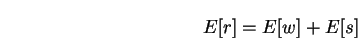 |
ค่าเฉลี่ยของเวลาตอบสนองของระบบ เท่ากับผลรวมของค่าเฉลี่ยของจำนวนเวลาที่รอรับบริการ และค่าเฉลี่ยของเวลาที่รับบริการ
ถ้าอัตราการให้บริการของเครื่องบริการไม่ขึ้นอยู่กับจำนวนงานที่รออยู่ในคิว เราจะได้
| 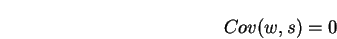 |
และ
| 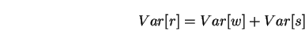 |
คือความแปรปรวนของเวลาที่ใช้ในระบบ เท่ากับผลรวมของความแปรปรวนของเวลาที่รอรับบริการ และความแปรปรวนของเวลาที่รับบริการ